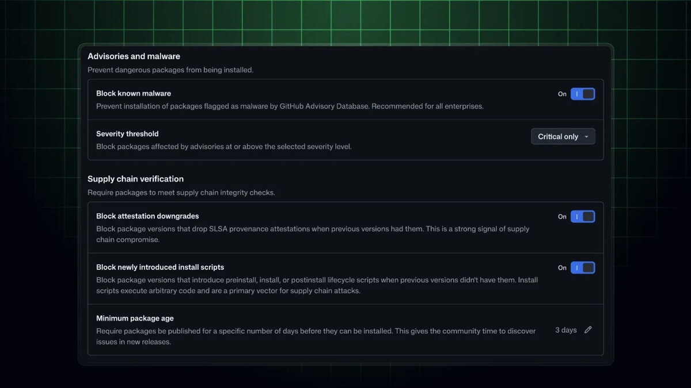

Package Firewall встаёт между эндпоинтами (рабочими машинами, CI-раннерами, внутренними реестрами) и вышестоящими репозиториями пакетов. Через него проходят и запросы метаданных (списки версий), и сами загрузки пакетов: каждый запрос сверяется с политикой администратора ещё до того, как пакет попадёт на диск и выполнит install-скрипт. По сути это policy-gate на момент установки — последняя точка, где вредоносный код можно остановить.
Администратору доступны три группы controlling-политик: настраиваемый cooldown — блокировка слишком свежих версий пакета (типичная схема малварной атаки — «освежить» популярный пакет заражённой версией и ждать, пока её подтянут сборки); сверка с GitHub Advisory Database на наличие advisories о малваре и уязвимостях; и проверки цепочки поставок — например, детект downgrade аттестаций сборок. Если пакет заблокирован ошибочно, разработчик может запросить исключение через форму — по механизму похожему на другие функции GitHub Advanced Security.
GitHub прямо называет причину: волна атак, где вредоносный код исполняется в момент установки пакета. Особенно уязвимы ИИ-агенты и CI-раннеры — они ставят зависимости, чтобы выполнить задачу или собрать проект, без человеческой проверки. Ровно тот класс инцидентов, который канал разбирает всю осень: агент сам решает, что установить, и промпт-инъекция или typosquat в задаче превращается в executed code в корпоративном CI.
Превью открыто с 20 октября для всех клиентов GitHub Enterprise Cloud, включая версии с data residency. На время превью сервис бесплатен; после GA тарификация станет метровой — по аналогии с биллингом GitHub Actions. Важно: пока firewall понимает только npm — остальные экосистемы (PyPI, NuGet, Maven) в планах, но не в превью. Так что тем, кто живёт на Python-зависимостях, пока придётся держать собственные зеркала и сканеры.
Владелец новости — сам GitHub: официальные изменения цепочки поставок постепенно становятся обязательной инфраструктурой, и «агент ставит пакеты сам» теперь проектируют вместе с фильтром, который решает, ставить ли.